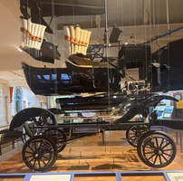

Detroit impressions:
• The downtown is full of beautiful buildings. All of them seem to have been built specifically in the 1920s. I guess that is after the city had accumulated enough auto wealth but before the twin hits of Modernism and the Depression. (I hadn’t known that the GM Renaissance Center, built as a revitalization project, was at the time the largest private development in US history, and also at the time the world’s tallest hotel. It may be large, but it is not pretty.) The downtown is surprisingly depopulated -- both the streets and the sidewalks feel empty. That said, it didn’t feel at all unsafe. There are lots of great homes in the suburbs.
• The Henry Ford Museum of American Innovation is amazing, and it’s worth visiting Detroit for it alone. Among many (many) other things, it contains the oldest known surviving steam engine in the world, the actual Montgomery bus on which Rosa Parks refused to give up her seat, a deconstructed Model T, a deconstructed Eames Chair, and many great cars, agricultural equipment, locomotives, industrial specimens, and more. (They have the Lincoln Continental that JFK was riding in when assassinated -- which, apparently, was returned to service and used by several subsequent presidents.)
• The museum made me wonder why American car design peaked in the mid-60s. (This fact is very evident at the museum.) The LLMs blame the 1966 National Traffic and Motor Vehicle Safety Act. (Not quite https://wtfhappenedin1971.com/, but close.)
• Good food exists but it is hard to find.
• The Heidelberg Project also exists and is unique.
• We stayed at the Dearborn Inn, which is wonderful, and contains cottages modeled after the homes of significant American figures. Dearborn (and Hamtramck) are now predominantly Muslim, apparently for reasons that go back a century to Henry Ford’s $5 wage. Dearborn felt noticeably prosperous (we stopped for coffee at a fancy Japanese cheesecake cafe); Hamtramck did not.
• https://michigan.gov/ says that the Hispanic population of Michigan is just 6%. Coming from California, the absence is very striking.
• The Detroit Institute of Arts is remarkable, particularly the room with the American landscapes and the section with the Dutch masters (especially The Visitation). An obvious question is why there is nothing quite like it in the Bay Area given how much richer the latter is than Detroit ever was -- we techies are just so uncultured by comparison. The Diego Rivera murals are amazing (and quite strange; you can see why they were controversial).
• Detroit is full of historic plaques -- they are truly everywhere. This is presumably due in part to the fact that Detroit has a lot of history, but it still has many more than places with comparable historical depth. Some research suggests that it might be related to generous tax credits for historic preservation. Whether or not that is true, Detroit persuades me that other places should engage in more plaquemaxxing.
• I recommend a visit! You overall leave with some sense for how exciting America must have felt in the early 20th century.
